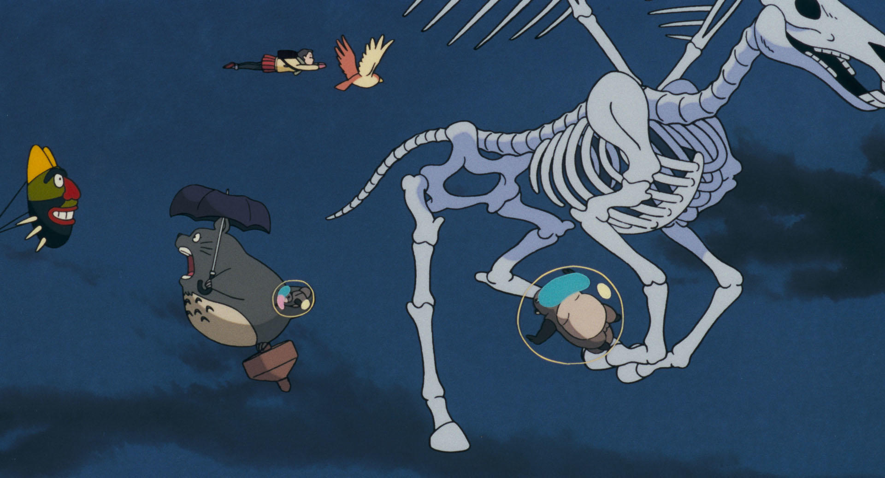

1位 千と千尋の神隠し

たいていの人が見てると思うくらい有名な作品ですが、物語の展開が分かりやすく面白いです。子供の時に見た時と成長してから見るのとでは働くことの大変さが分かったり、子供の時にわからなかった意味が分かったりして改めて見るとすごい良いと思います。あと湯ばあばが意外と良いやつ。
2位 崖の上のポニョ

やっぱ一番の見どころはポニョが魚をやめて人間になるシーンですよね。最初のうちは父親のフジモトがポニョを取り返しに来るけど最終的にはグランマンマーレやポニョの妹たちの助力もあり宗介とともに生きていくというストーリーが子供ながらに親の気持ちを考えさせられる良いストーリーだなと思います。
3位 平成狸合戦ぽんぽこ
この作品は人間によって自然が破壊されてそれを辞めさせるべく人間と戦うというのが大まかな内容です。最終的に狸側が負けてしまって人間に化けて働きながら生きていくことになるのですが、人間として働いている狸が自然を破壊する仕事に就くという何とも言えない気持ちになります。あとほかのジブリキャラが一瞬出てきてるのがいい！